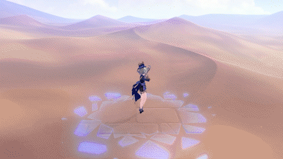

Furina is a playable character in Genshin Impact and is the Hydro Archon of Fontaine and the god of Justice. She enjoys theatre and trials.
Furina's elemental skill has two different versions based on what state she is in - Pneuma or Ousia. Using the skill Salon Solitaire
summons guests to assist Furina.
While in Ousia state, Furina summons three Salon members, Gentilhomme Usher, Surintendante Chevalmarin and Mademoiselle Crabaletta.
They attack enemies, which the player attacks.
In Pneuma state, Furina summons the Singer of Many Waters, who peridiocally heals the active character.



When unleashing her ultimate ability, Let the People Rejoice, Furina empowers the whole team based on the change of HP.